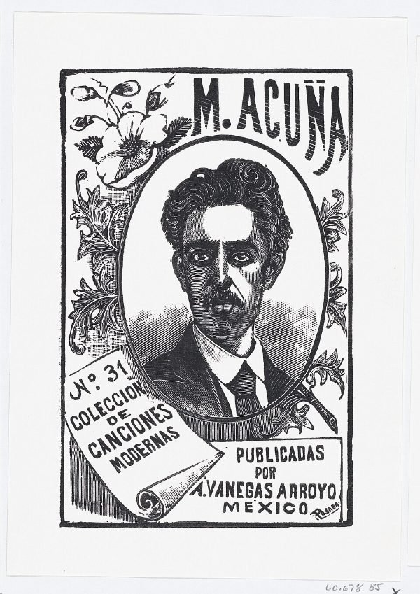

Poesia del giorno · 6 dicembre


Manuel Acuña
Manuel Acuña arrivò a Città del Messico a diciassette anni per studiare medicina. Scriveva versi, teatro, frequentava i circoli letterari; si innamorò di Rosario de la Peña, la donna a cui dedicavano poesie tutti i poeti della capitale. Il 6 dicembre 1873, a ventiquattro anni, si tolse la vita nella sua stanza della scuola di medicina.
Il «Nocturno a Rosario» è il suo addio. Dieci strofe di dieci versi: le notti senza sonno, la casa che sognava con lei e con la madre «come un Dio», e l’ultimo saluto alla giovinezza. In Messico è ancora la poesia d’amore che tutti sanno a memoria.
Nocturno a Rosario
I ¡Pues bien! yo necesito decirte que te adoro, decirte que te quiero con todo el corazón; que es mucho lo que sufro, que es mucho lo que lloro, que ya no puedo tanto, y al grito en que te imploro te imploro y te hablo en nombre de mi última ilusión. II Yo quiero que tú sepas que ya hace muchos días estoy enfermo y pálido de tanto no dormir; que ya se han muerto todas las esperanzas mías, que están mis noches negras, tan negras y sombrías, que ya no sé ni dónde se alzaba el porvenir. III De noche, cuando pongo mis sienes en la almohada y hacia otro mundo quiero mi espíritu volver, camino mucho, mucho, y al fin de la jornada las formas de mi madre se pierden en la nada y tú de nuevo vuelves en mi alma a aparecer. IV Comprendo que tus besos jamás han de ser míos, comprendo que en tus ojos no me he de ver jamás; y te amo y en mis locos y ardientes desvaríos bendigo tus desdenes, adoro tus desvíos, y en vez de amarte menos te quiero mucho más. V A veces pienso en darte mi eterna despedida, borrarte en mis recuerdos y hundirte en mi pasión; mas si es en vano todo y el alma no te olvida, ¡qué quieres tú que yo haga, pedazo de mi vida, qué quieres tú que yo haga con este corazón! VI Y luego que ya estaba concluido tu santuario, tu lámpara encendida, tu velo en el altar; el sol de la mañana detrás del campanario, chispeando las antorchas, humeando el incensario, y abierta allá a lo lejos la puerta del hogar... VII ¡Qué hermoso hubiera sido vivir bajo aquel techo, los dos unidos siempre y amándonos los dos; tú siempre enamorada, yo siempre satisfecho, los dos una sola alma, los dos un solo pecho, y en medio de nosotros mi madre como un Dios! VIII ¡Figúrate qué hermosas las horas de esa vida! ¡Qué dulce y bello el viaje por una tierra así! Y yo soñaba en eso, mi santa prometida; y al delirar en eso con la alma estremecida, pensaba yo en ser bueno por ti, no más por ti. IX ¡Bien sabe Dios que ese era mi más hermoso sueño, mi afán y mi esperanza, mi dicha y mi placer; bien sabe Dios que en nada cifraba yo mi empeño, sino en amarte mucho bajo el hogar risueño que me envolvió en sus besos cuando me vio nacer! X Esa era mi esperanza... mas ya que a sus fulgores se opone el hondo abismo que existe entre los dos, ¡adiós por la vez última, amor de mis amores; la luz de mis tinieblas, la esencia de mis flores; mi lira de poeta, mi juventud, adiós!
da Poesías, con un prologo di Fernando Soldevilla, Parigi, Garnier hermanos, 1894, pp. 231–236 · stampa su Internet Archive